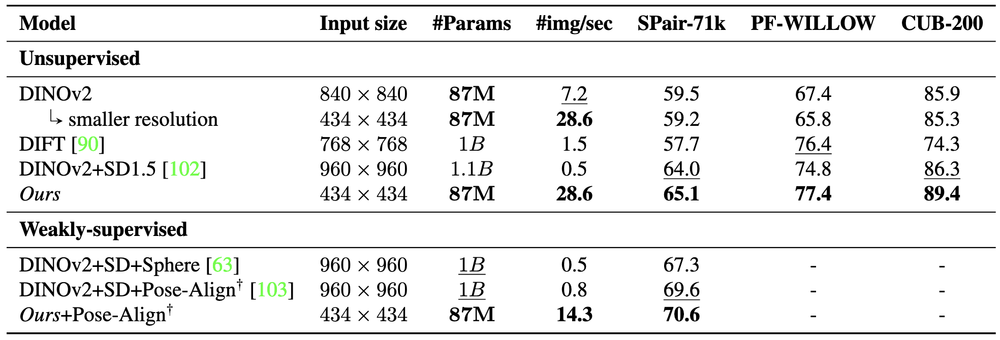

Method

Illustration of our multi-teacher distillation framework (a) and 3D data augmentation method (b). We distill two complementary models, DINOv2 and SDXL Turbo, into one single and more efficient model. Using unsupervised 3D data augmentation we further refine our distilled model to achieve new state-of-the-art in both throughput and performance.
Results
Comparison of total parameter count, throughput (images per second) on a single NVIDIA A100 80GB and performance on different datasets. Performance is measured in PCKbbox@0.1 per point, averaged over all points for PF-WILLOW and CUB200, and averaged over classes for SPair-71k. †: Pose-align can only be applied to datasets that include keypoint-specific labels. The best performances are bold, while the second-best are underlined.
Qualitative Examples
Semantic Correspondence
Examples image pairs from SPair-71k with predicted correspondences of different methods. Green indicates correct, while red indicates incorrect according to PCKbbox@0.1. (840 × 840) was used as input resolution for DINOv2.

Video Correspondence
Video correspondence sample, showing accurate correspondences at a high frame rate. We use source points on the first frame to calculate the corresponding points on all other frames at almost 30 FPS on an NVIDIA A100 80GB.
BibTeX
@article{fundel2025distilldift,
author = {Fundel, Frank and Schusterbauer, Johannes and Hu, Vincent Tao and Ommer, Björn},
title = {Distillation of Diffusion Features for Semantic Correspondence},
journal = {WACV},
year = {2025},
}